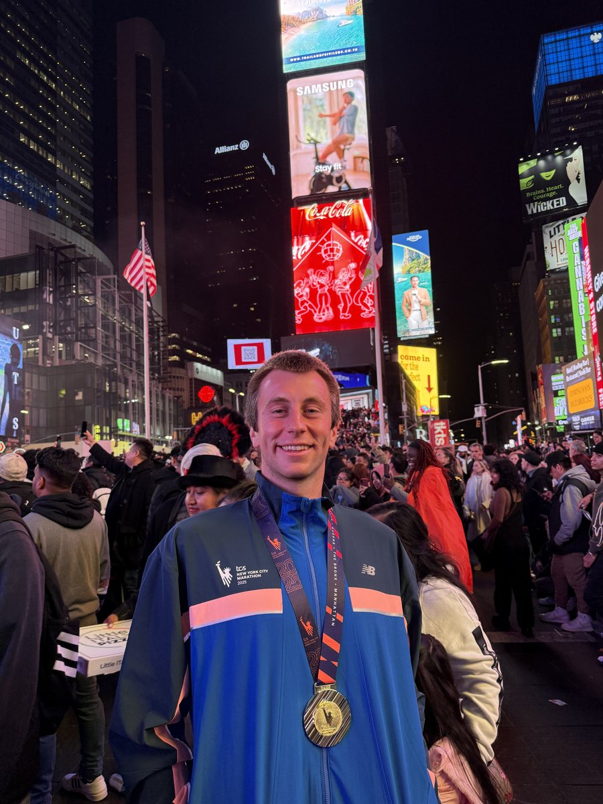
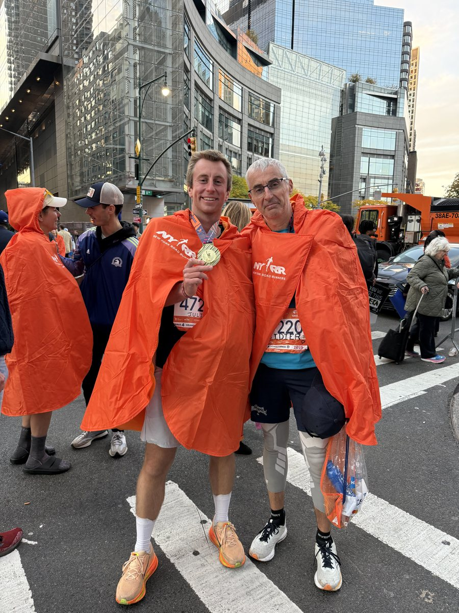
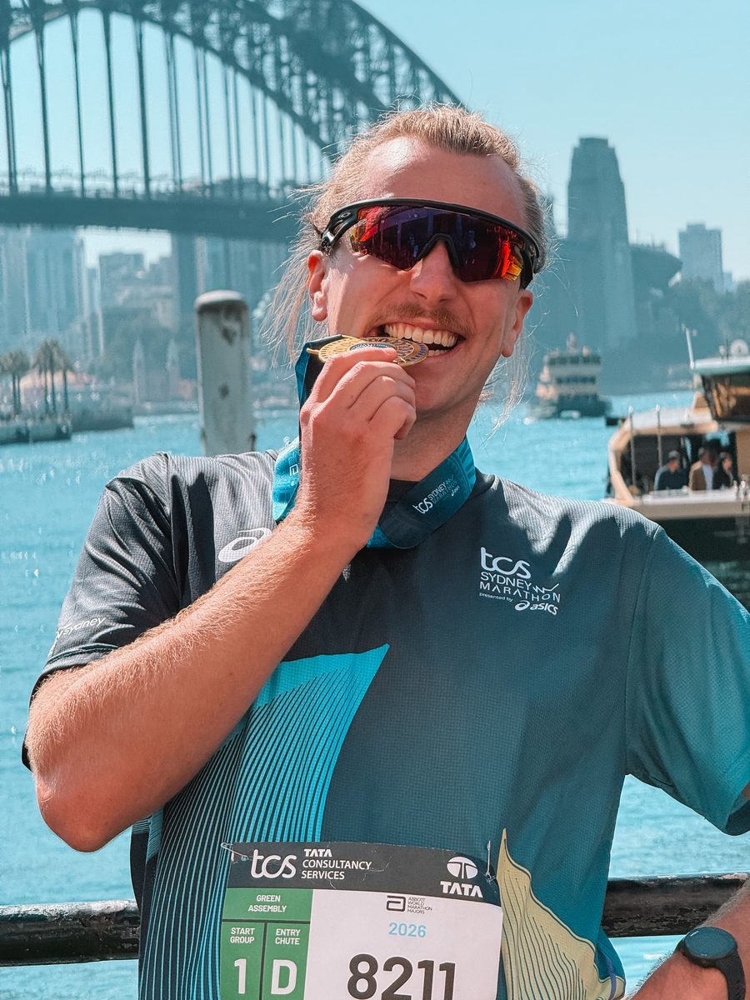
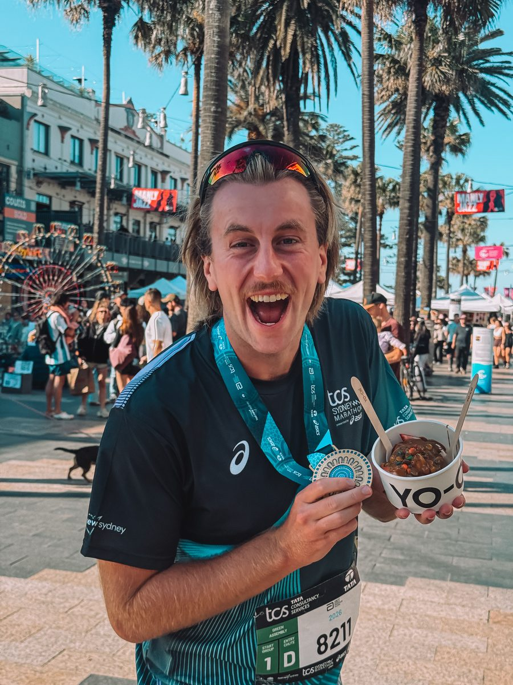
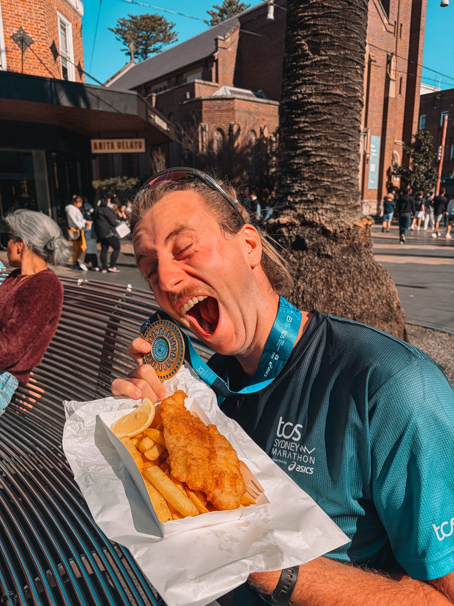

Ce que sont les Majors
Les Abbott World Marathon Majors sont le circuit des plus grands marathons du monde. Ils étaient six pendant des années. Sydney a rejoint le groupe en 2025, ce qui en fait sept.
- TokyoMars
- BostonAvril, le seul avec un temps qualificatif obligatoire
- LondresAvril
- SydneyAoût ou septembre, le dernier arrivé
- BerlinSeptembre, le plus rapide des sept
- ChicagoOctobre
- New YorkNovembre, le plus grand du monde
Terminer les sept donne droit au Six Star Finisher, devenu Seven Star avec l'arrivée de Sydney. C'est ce qui pousse des milliers de coureurs à les enchaîner sur plusieurs années.
À compléter : ce que représentent les Majors pour toi, et si tu vises les sept.
Comment décrocher un dossard
C'est le vrai sujet. Sur la plupart des Majors, la demande dépasse largement le nombre de places, et s'inscrire ne suffit pas. Quatre portes d'entrée existent, et elles n'ont ni le même prix ni les mêmes chances.
Le tirage au sort. Gratuit ou presque, ouvert plusieurs mois à l'avance, et c'est la voie la moins chère. C'est aussi celle où l'on a le moins de chances.
Le temps qualificatif. Si tu cours assez vite sur un marathon reconnu, certaines courses te réservent une place. Boston fonctionne uniquement comme ça.
Les tour opérateurs. Ils achètent des dossards par lots et les revendent avec l'hébergement et parfois le vol. C'est nettement plus cher qu'une inscription seule, mais le dossard est garanti. C'est par là que je suis passé pour New York.
Les dossards solidaires. Tu t'engages à récolter une somme pour une association. La place est garantie, l'engagement est réel.
À compléter : les tour opérateurs que tu connais, leurs tarifs, et ce que tu recommandes selon le budget.
New York
Le plus grand marathon du monde, début novembre, et le seul qui traverse les cinq arrondissements de la ville.
Comment j'ai eu mon dossard. Je suis passé par un tour opérateur français, Ouest Voyage, du groupe Havas Voyage. C'était le moyen de m'assurer une place : au tirage au sort, les chances sont très faibles.


À compléter : l'année, ton temps si tu veux le donner, le prix du séjour avec le tour opérateur, et ce que vaut le parcours.
J'ai raconté toute l'expérience en vidéo, et elle est dans mon guide de New York.
Sydney
Le dernier arrivé dans le circuit, et donc celui où il est encore le plus facile d'entrer. Le parcours passe par le Harbour Bridge et arrive devant l'Opéra.
Je l'ai couru en 2026, quelques semaines après mon arrivée en Australie pour mon PVT.



À compléter : comment tu as eu ton dossard, le prix de l'inscription, le parcours, et ce que ça change de courir un marathon quelques semaines après avoir changé de pays.
Les dates d'inscription
Chaque course a son calendrier, et les fenêtres sont courtes. Rater l'ouverture d'un tirage au sort, c'est attendre un an de plus.
À compléter : les périodes d'ouverture des tirages au sort et des inscriptions, course par course.
Les sites officiels
Toujours vérifier les dates et les tarifs à la source. Les règles d'inscription changent d'une année sur l'autre.
Le circuit : worldmarathonmajors.com
Le marathon de New York : nyrr.org
Le marathon de Sydney : sydneymarathon.com
À compléter : les sites officiels des cinq autres Majors, au fur et à mesure.
Mon équipement de running
Chaussures, montre, nutrition et récupération : tout ce que j'utilise vraiment est rangé au même endroit.
Voir mes ressources runningTu pars courir à l'étranger ?
Un marathon à l'autre bout du monde, c'est un voyage avec une contrainte de plus : tu ne peux pas te tromper sur les dates, l'arrivée, ni sur le décalage horaire.
Je construis l'itinéraire autour de ta course. Premier échange gratuit, et sans engagement.
Page vérifiée et mise à jour le .